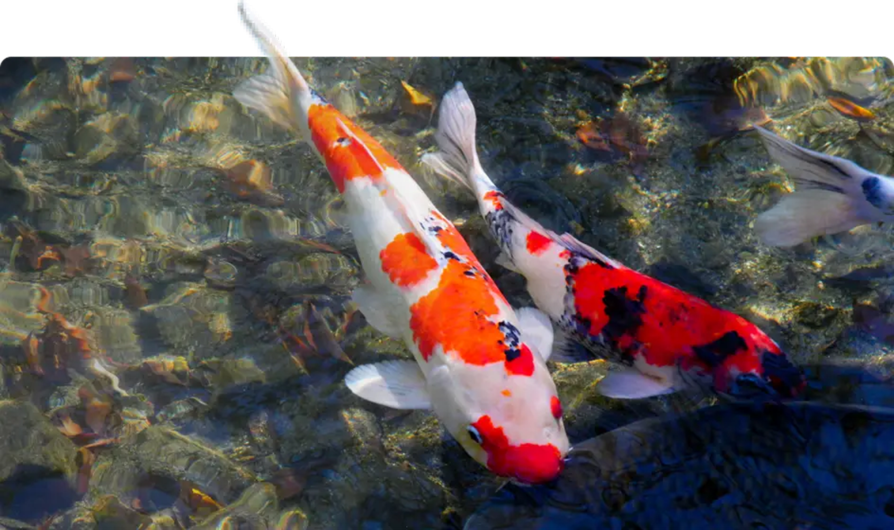

Koi
Ornamental fish
Life Span
12 - 17
years
Life Span
12 - 17
years
Koi are ornamental varieties of common carp, bred for vivid colors and distinctive patterns.
Well-cared-for koi can live for decades; reports of fish living beyond 200 years are exceptional and difficult to verify.


Hanako, a scarlet koi, is often said to have lived 226 years, though the extraordinary age has not been independently verified.
Kohaku koi are white with red markings. Their vivid patterns are easy to admire, but may also make them more visible to predators.

Images: Getty Images. Data: en.wikipedia.org · anothersite.com · coolfacts.com. Hero image: Koi in a pond